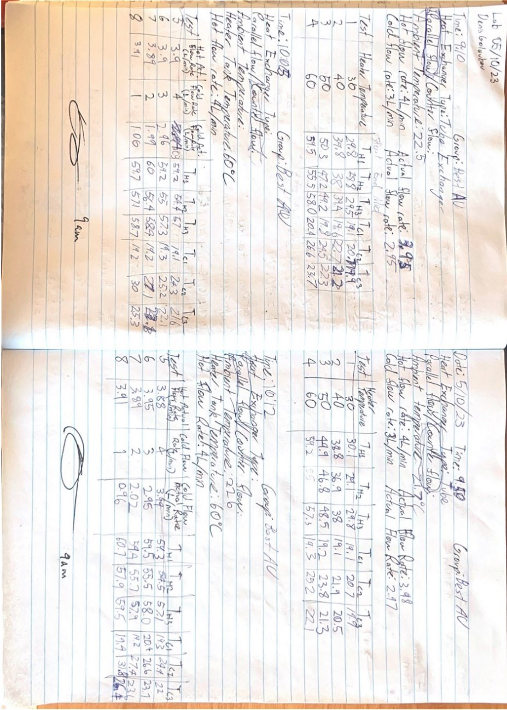

Design Review Memo
Heat Exchanger Design
Thermofluids group project using heat-exchanger design calculations, report figures, CAD/Excel-style visuals, and performance-analysis documentation.
A heat exchanger design project presented with extracted report figures and a downloadable report PDF.
